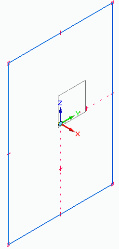
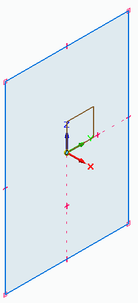
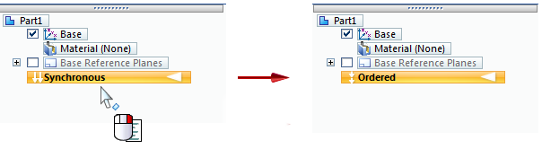

Synchronous and ordered sketches
Sketch type is a byproduct of the environment you are working in, whether that is synchronous or ordered. Sketching is just a tool within those environments.
In the following example, the first sketch is an ordered sketch. The second sketch is a synchronous sketch.


What are ordered sketches?
Sketches created in the ordered environment are referred to as ordered sketches. Ordered sketches are used to create history-based parts and features.
Assembly sketches and assembly layout sketches also are ordered sketches.
Ordered sketches cannot be used to create a synchronous feature, because while in the synchronous environment, ordered elements are not available for selection.
What are synchronous sketches?
Sketches created in the synchronous environment are synchronous sketches. You can use synchronous sketches to create both synchronous and ordered parts and features. You also can use synchronous sketches to to drive ordered features. This is beneficial when you need to have several features referencing one another.
The biggest difference between ordered and synchronous sketches is in the editing. The sketches used to create a synchronous part are no longer associative to the part. This is because the design intent is in the model, not in the sketch used to create it. You can still reference the sketch, and you can restore and reuse it, but it is no longer tied to the part that you created. This means that you can edit the part directly—without having to know anything about how it was created—using the synchronous steering wheel, which is only available in the synchronous environment.
You can only have one sketch on a plane, but the sketch may contain as many regions and separate elements as you need. If separate sketches are required on one sketch plane, turn off the Merge with Coplanar Sketches command.
Which sketch type should you choose?
When is it appropriate to use a synchronous sketch versus an ordered sketch, or to use both?
The type of sketch you should create is really based on personal preference. If you are just learning to sketch, we recommend that you create synchronous sketches. These give you the most flexibility when it comes time to edit the model. However, if you are familiar with and comfortable with ordered modeling, then you can stick with that.
There are some modeling sequences that lend themselves to hybrid modeling, which combines both synchronous and ordered features in the same model.
-
Ordered rounds added to synchronous parts behave better when the part is modified.
-
Some sheet metal functionality does not work as well in the synchronous environment. An example of this is converting a synchronous solid model to a sheet metal part.
Changing from one sketch type to another
If you are in the synchronous environment and want to create an ordered sketch, you can change from the synchronous environment to the ordered environment by doing the following:
-
Right-click the yellow environment bar in PathFinder and choose Transition to Ordered.

Tip:The same process works in reverse. If you are in the ordered environment, then the Transition to Synchronous command is available.